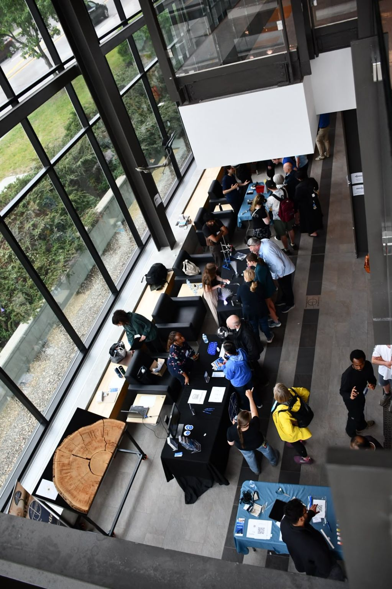
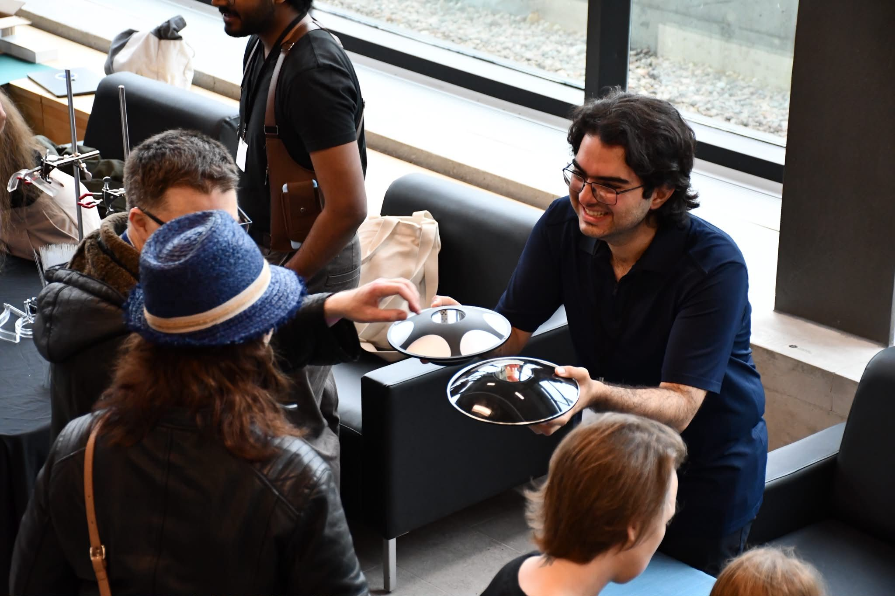

June 2026 · Event
My First Doors Open Experience
I arrived at Ottawa in the late spring of 2026. One of my colleagues, Nazanin Dehghan, told me about this public event that the SPIE was coordinating later in the summer, called "Doors Open". I really like the idea of openning the doors of the Advanced Research Complex (ARC) to the public and try to show them the cool science in progress.

The most exciting part of my experience during this event, as a physics demonstrator, was getting amazing thoughtful questions from the visitors! I also loved how they were trying to connect the core ideas behind the demonstrations with their everyday life. Most of the visitors of my booth did not have a degree in physics but could pinpoint some great questions which had puzzled physicists before. This lovely experience reminded me that if we stay in touch with our inner curious kid, we can all be good observers, therefore physicists.
